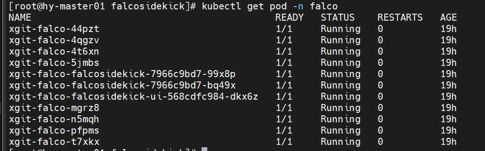

Falco ：云原生安全运行时项目
kube-sec
CNCF官方继CKA之后推出了含金量更高的CKS考试，聚焦于Kubernetes供应链安全。k8s整体的供应链安全大致分为以下几个方面，有时间会一一更新：- 集群安全：
TLS证书认证、RBAC； Security Context：限制容器的行为，例如只读文 件系统、特权、运行用户等 ；Pod Security Policy：集群级的Pod安全策略， 自动为集群内的Pod配置安全策略 ；Sysctls：允许容器设置内核参数 ；AppArmor：限制容器中应用对资源的访问权限 ；Network Policies：控制集群中网络通信 ；Seccomp：限制容器内进程的系统调用；
- 集群安全：
- 这次我们介绍和系统调用相关的，谈如何监控容器的系统调用；
Falco 介绍
Falco 作为一款为云原生平台设计的进程异常行为检测工具，支持接入系统调用事件和 Kubernetes 审计日志。Falco 的工作方式是查看文件更改、网络活动、进程表和其他数据是否存在可疑行为，然后通过可插拔后端发送警报，通过内核模块或扩展的 EBPF 探测器在主机的系统调用级别检查事件。Falco 包含一组丰富的规则，你可以编辑这些规则以标记特定的异常行为，并为正常的计算机操作创建允许列表。
总体来讲，
Falco是一个基于规则的进程异常行为检测工具，它目前支持的事件源有两种：Sysdig内核模块；Kubernetes审计日志；
其中，
Sysdig内核模块提供的是整个宿主机上的实时系统调用事件信息，是Falco依赖的核心事件源。另外，
Falco支持五种输出告警的方式，后两种方式使得我们能够很容易将Falco与其他组件或框架组合起来。- 输出到标准输出
- 输出到文件
- 输出到
Syslog - 输出到
HTTP服务 - 输出到其他程序（命令行管道方式）
下图是
Falco在k8s环境中的流程图：
开启 Kubernetes 审计日志
apiserver配置：1
2"--audit-log-path=/var/log/kube-audit/audit.log",
"--audit-policy-file=/etc/kubernetes/audit-policy.yaml"创建审计规则文件：
1
2
3
4
5
6
7
8
9
10
11
12
13
14
15
16
17
18
19
20
21
22
23
24
25
26
27
28
29
30
31
32
33
34
35
36
37
38
39
40
41
42
43
44
45
46
47
48
49
50
51
52
53
54
55
56
57
58
59
60
61
62
63
64
65
66
67
68
69
70
71
72
73
74
75
76mkdir /var/log/kube-audit
cat /etc/kubernetes/audit-policy.yaml
---
apiVersion: audit.k8s.io/v1beta1 # This is required.
kind: Policy
Don't generate audit events for all requests in RequestReceived stage.
omitStages:
- "RequestReceived"
rules:
Log pod changes at RequestResponse level
- level: RequestResponse
resources:
- group: ""
# Resource "pods" doesn't match requests to any subresource of pods,
# which is consistent with the RBAC policy.
resources: ["pods"]
Log "pods/log", "pods/status" at Metadata level
- level: Metadata
resources:
- group: ""
resources: ["pods/log", "pods/status"]
Don't log requests to a configmap called "controller-leader"
- level: None
resources:
- group: ""
resources: ["configmaps"]
resourceNames: ["controller-leader"]
Don't log watch requests by the "system:kube-proxy" on endpoints or services
- level: None
users: ["system:kube-proxy"]
verbs: ["watch"]
resources:
- group: "" # core API group
resources: ["endpoints", "services"]
Don't log authenticated requests to certain non-resource URL paths.
- level: None
userGroups: ["system:authenticated"]
nonResourceURLs:
- "/api*" # Wildcard matching.
- "/version"
Log the request body of configmap changes in kube-system.
- level: Request
resources:
- group: "" # core API group
resources: ["configmaps"]
# This rule only applies to resources in the "kube-system" namespace.
# The empty string "" can be used to select non-namespaced resources.
namespaces: ["kube-system"]
Log configmap and secret changes in all other namespaces at the Metadata level.
- level: Metadata
- level: Request
resources:
- group: "" # core API group
resources: ["secrets", "configmaps"]
Log all other resources in core and extensions at the Request level.
- level: Request
resources:
- group: "" # core API group
- group: "extensions" # Version of group should NOT be included.
A catch-all rule to log all other requests at the Metadata level.
- level: Metadata
# Long-running requests like watches that fall under this rule will not
# generate an audit event in RequestReceived.
omitStages:
- "RequestReceived"
重启 kubelet
systemctl restart kubelet
部署 Falco
安装
kernel-devel1
2
3[root@hy-node03 ~]# uname -r
3.10.0-957.el7.x86_64
[root@hy-node03 ~]# yum localinstall kernel-devel-3.10.0-957.el7.x86_64.rpm安装
falco，falco安装方式很多。既然用了k8s，那我们以daemonsets的方式来部署；官方提供了helm chart包；这里暂时不展开，我们下面会和FalcoSideKick一起部署；
使用 FalcoSideKick 扩展 Falco 的输出
上面我们提到 我们能够很容易将
Falco与其他组件或框架组合起来，这里falco提供了FalcoSideKick来提供各种工具的集成，包括但不限于以下工具。同时还提供了官方的UI界面：SlackRocketchatMattermostTeamsDatadogAlertManagerElasticsearchLokiNATSInfluxdbAWS LambdaAWS SQSSMTP (email)OpsgenieWebhook
使用
helm部署，修改values.yaml：- 启用
falcosidekick； - 启用
auditlog； - 启用
falcosidekick-ui； - 传送到
AlertManager；
1
2
3
4
5helm repo add falcosecurity https://falcosecurity.github.io/charts
helm repo update
helm3 pull falcosecurity/falco
kubectl create ns falco- 启用
查看部署情况：

falcosidekick-ui提供了一个web界面来进行观测：
后续工作
- 用
filebeat收集集群的audit log；